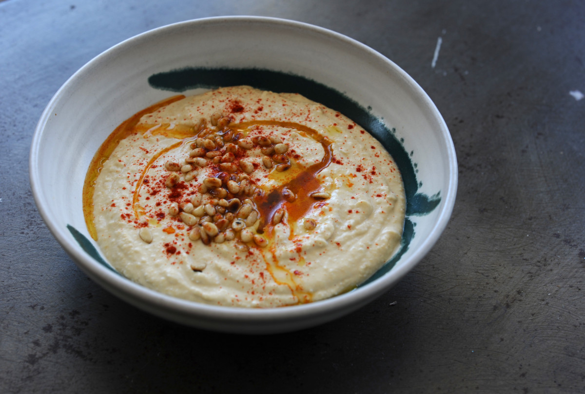
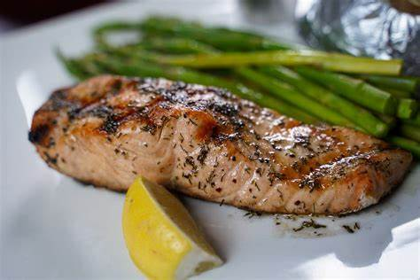
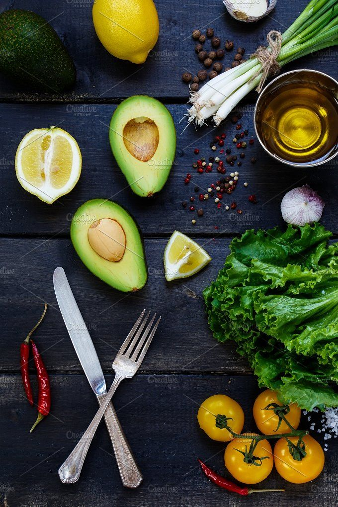

Gallery
Pancakes
is a flat cake, prepared from a starch-based batter that may contain eggs, milk and butter and cooked on a hot surface, often frying with oil or butter.
Cupcakes
is a small cake designed to serve one person, which may be baked in a small thin paper or aluminum cup.
Hummus
mashed chickpeas blended with tahini, lemon juice, and garlic, includes olive oil, a few whole chickpeas, parsley, and paprika

Hamburger
ground meat, typically beef—placed inside a sliced bun or bread roll. Hamburgers are often served with cheese, lettuce, tomato, onion, pickles, bacon.
Salmon
food fish classified as an oily fish with a rich content of protein and omega-3 fatty acids. .
Vegetables
any kind of plant life or plant product; in common usage, the term usually refers to the fresh edible portions of certain herbaceous plants.